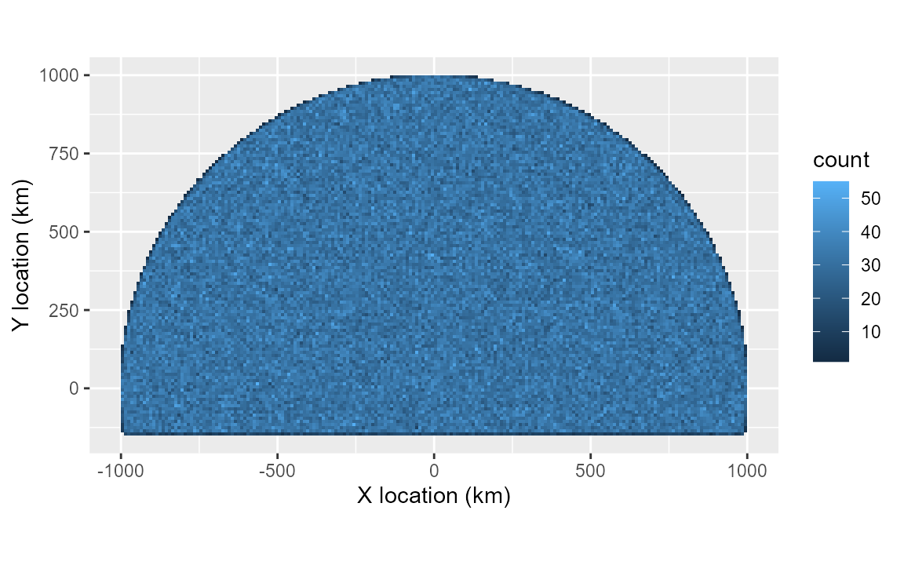
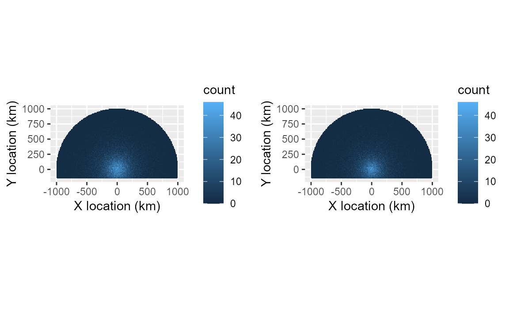

Non-uniform study areas: distance truncation and coastlines
Source:vignettes/callDensity_coast.Rmd
callDensity_coast.Rmd
library(callDensity)
library(ggplot2)
library(scales)
library(kableExtra)
library(VGAM)
#> Loading required package: stats4
#> Loading required package: splinesFurther exploration and topics in callDensity package (TODO)
-
Spatial distribution of calls
- Effect of land, ice, and other zero-probability areas
- Effect of non-uniform distribution of calls in area
- Truncation in SNR
- Detectors with different slopes
- Minimum number of recaptures/effort required to get a reliable estimate
- More realistic Transmission Loss models and effects of mismatch
As usual, we start with the density equation:
where: is call density, is number of calls, is false discovery rate, is number of sensors (here always 1), is the duration of data analysed (in hours), is the probability of detection in the study area, and is the study area (in km^2).
1A) Effect of land and other zero-probability areas
Scenario: Antarctic blue whales in a quiet ocean with spherical spreading of sounds. Instead of open-ocean, the recorder is located 144 km north of a coastline.
In this example, we provide truncation distances to the Monte-Carlo simulation to exclude the coastal regions from the simulation. We also amend our estimate of the study area to account for the area excluded by coasts.
n = 1e6; # number of simulated calls (regardless of whether detected or not);
R = 1e6; # radius of 1000 km (but in m)
k <- 1 # number of sensors
minDate <- as.POSIXct("2025-01-01")
maxDate <- as.POSIXct("2025-12-31")
Time <- as.numeric(difftime(maxDate,minDate,unit="days"))/365 # in years
# 1) Generate n uniformly distributed calls within radius R and time period Time
sim <- simCallLocation(n=n, R=R, minDate=minDate, maxDate=maxDate)
A_circ = studyArea(R/1e3) # Circular study area in km^2
coast= -144e3; # Simulate coastline at y = -144 km;
sim <- subset(sim, sim$y>=coast);
n = dim(sim)[1]
# Area of a circle segment given radius r and segment height, h
# A = r^2 * acos( (r-h)/r ) - (r-h)*sqrt(2*r*h-h^2)
h = R-abs(coast) # Height of segment
# Area of excluded segment
A_exclude = (R^2 * acos( (R-h)/R) - (R-h)*sqrt(2*R*h-h^2) )/ 1e3^2 # in km^2
A = A_circ - A_exclude # Subtract the excluded area from the circle (in km^2)
TrueCallDensity = n/(A*Time)
# Map showing true location of all calls
ggplot(data=sim, aes(x=x/1e3,y=y/1e3))+
# geom_point(colour = "black",alpha = 0.1, size=0.1)+
geom_bin_2d(alpha=1,binwidth=c(10,10))+
coord_equal()+
xlab("X location (km)")+
ylab("Y location (km)")
Sonar equation parameters for this scenario:
In previous simulations we had four radial transects. Here we create four additional transect radials (eight in total) in order to approximate the study area with more fidelity.
SL <- data.frame(mean=190, sd=4, sampleSize=350) # True SL distribution for sim
NL = data.frame(mean=84, sd = 4, sampleSize = n) # True NL distribution for sim
tlFunc <- function(r)20*log10(r)
# Simulate the true acoustic properties of each call and false positive
sim <- simCallAcoustics(sim, SL, NL, TL = tlFunc)
# Per-transect estimate of TL (used by callDensity package to estimate pDet)
numTransects=8
TL <- simTLradials_20logR(maxRange=R, rangeStep=100, numTransects=numTransects)Estimate Truncation distances
The TL models in these transects assume spherical spreading (without regard for the coast).
Regardless of whether the TL models are a good match for the physical environment or not, we need to exclude from the simulation (and study area) portions of the transects where the animals cannot be located (e.g. on land).
# Work out the range for each radial over which to truncate.
radials = seq(from=0,to=315, by=360/numTransects)
range_m = seq(from=5,to=R,by=100)
# Find first r where the r*sind(radials) <= coastline
truncDist <- matrix(R,nrow=1,ncol = length(radials))
# Loop over each radial. find the range at which it encounters the coast, and
# truncate (i.e. Distances beyond this range will be excluded from the analysis)
for (i in 1:length(radials)){
rangeIx <- which(sin(radials[i]*pi/180)*range_m <= coast)[1]
truncDist[i] <- ifelse(is.na(rangeIx),R,range_m[rangeIx])
}
# callDensity package provides a function to calculate area from radials with
# different lengths
Atrunc <- callDensity::studyArea(R,truncDist)/1e6Simulate detectors:
| Detector | Description | Location/SNR ‘threshold’ | Scale/slope | False positive rate |
|---|---|---|---|---|
| Detector 1 | Reliable and good detector, meant to emulate a human analyst. | Lower | Same | Lower |
| Detector 2 | Automated detector, meant to emulate a signal processing algorithm. | Higher | Same | Higher |
#Specify parameters for detector 1
# Good detector with low threshold (location) and low false positive rate.
det1params = data.frame(
location=1, # AKA intercept?
scale=1, # AKA slope?
func='plogis', # logistic function
c=0.1, # False discovery rate
fpMean=0, # Mean of distribution of false positives (in dB SNR)
fpSD = 1 # Standard deviation false positive distribution (in dB SNR)
)
# Detector 2 has a higher threshold (location), scale, and false positive rate
# than detector 1.
det2params = data.frame(
location=3, # AKA intercept?
scale=2, # AKA slope?
func='plogis', # logistic function
c=0.3, # False discovery rate
fpMean=0, # Mean of distribution of false positives (in dB SNR)
fpSD = 1 # Standard deviation false positive distribution (in dB SNR)
)
# Simulate two detectors each with the different parameters
simDet1<- simulateDetector(det1params,sim)
simDet2<- simulateDetector(det2params,sim)View the spatial detection density (which is not the same as spatial call density since it accounts for neither detection probability nor time).
p1<-plotSpatialDetections(simDet1)
p2<-plotSpatialDetections(simDet2)
gridExtra::grid.arrange(p1,p2,nrow=1)
Subsample data for detector characterisation
Castro et al. (2024) subsample approximately 200 hours evenly spaced throughout the year to create detector characterisation curves (detection vs SNR). Here we subsample 1 hour in every 41 hours yielding 214 subsamples that are 1 hour in duration.
subsampleDet1 <- subsampleSimInTime(simDet1)
subsampleDet2 <- subsampleSimInTime(simDet2)Detection matching between detector 1 and 2
Both detectors (simulated subsets) operate on the same set of calls (i.e. they are different subsets of the same underlying simulation). So we can find detections from one detector that match those of the other detector by merging the detections into a capture history table.
Presently, false positives have randomly generated date-times, so have a negligible chance of matching between the two detectors.
TODO: Create false positives in a way that better approximates their real-world occurrence (i.e. in a way that allows them to be matched between detectors).
capHistTab<- simsTocaptureHistoryTable(subsampleDet1,subsampleDet2)
# Total number of true positive detections for detector1 OR detector2
nDetectedSubset <- with(capHistTab,sum(detect_table1 & groundTruth1 |
detect_table2 & groundTruth2) )
# Total number of positive detections for detector1 OR detector2
nPositiveSubset <- with(capHistTab,sum(detect_table1 | detect_table2))
# Number positive detections in FULL set
Nc <- sum(simDet2$detect_table)
# SNRinfo is used to calculate snrDetFun for detector2 assuming detector1 is the
# ground truth. This is an observer ground (OG) so includes false positives from
# detector1, but does not include detections from detector2 not detected on
# detector1
SNRinfo <- capHistTosnrInfo(capHistTab)Calculate call densities using callDensity package
We fit a capture-recapture model to these adjudicated data using the VGAM package with the function ‘vglm’ (Yee et al. 2015).
snrDetFun.glm <- callDensity::fitSNRdetectionFunc(SNRinfo,
modelType = "glm")
results.glm <- cde(Nc=Nc, capHistTab = capHistTab, snrDetFun = snrDetFun.glm,
SL = SL, TL = TL, A = A, modelType = 'glm',
truncationDistance = truncDist)
### Adjudicated capture recapture model
adjudicated <- subset(capHistTab,capHistTab$groundTruth1 &
(capHistTab$detect_table1 | capHistTab$detect_table2))
# Number of adjudicated positive detections
n_adj <- dim(adjudicated)[1]
# Combine SNR of both detectors (shouldn't be necessary unless we've somehow
# made them different)
adjudicated$SNR <- rowMeans(
subset(adjudicated,select=c('snr1','snr2')) ,na.rm=T) #dB
# Subset used for calculating false discovery rate of detector 2. Actually, we
# use the fact that the false discovery rate is equal to (1-precision).
tp <- subset(capHistTab, as.logical(capHistTab$detect_table2),
select = c('groundTruth2') )
precision <- sum(tp)/dim(tp)[1]
adj_c <- 1-precision
observerNames = c("detect_table1", "detect_table2")
snrDetFun.vglm <- fitSNRvglm(adjudicated, observerNames,
whichObserver = "detect_table2")
# Best estimate of NL
NLadj <- nlFromSnrInfo(capHistTosnrInfo(capHistTab), snrDetFun.vglm)
Pa.vglm <- callDensity::pDetInArea(snrDetFun.vglm, SL=SL, TLlookup = TL, NL=NLadj,
output.resolution.m=100,
outerloop = 100,
truncationDistance=truncDist, # in m
snrTruncationThreshold = -Inf)
pa.vglm <- Pa.vglm$overall
# Density estimation equation
Dc.vglm <- (Nc * (1 - adj_c) )/( k * Atrunc * pa.vglm * Time )
results.vglm <- data.frame(Dc=Dc.vglm, SampleSize=n_adj, A = Atrunc,# Environment
NLmean = NLadj$mean, NLsd = NLadj$sd,# Noise
# Detector params
model='vglm', c=adj_c, Pa=pa.vglm,
row.names = paste('ACR',numTransects, "radial transects"))
results = data.frame(Dc = TrueCallDensity, SampleSize = n, A = A,# Environment
NLmean = NL$mean, NLsd = NL$sd, # Noise
model=det2params$func, c = det2params$c, # Detector params
Pa = mean(simDet2$p_det,na.rm=TRUE),
row.names='Truth')
results<-rbind( results, results.vglm)
kableExtra::kbl(results, digits = c(4,3,0,1, 2, NA, 3, 4),
col.names= c('Dc','(sub)Sample Size', 'A','NL_mean','NL_sd',
'Model','c','P_a')) %>%
kableExtra::kable_classic(full_width=FALSE)| Dc | (sub)Sample Size | A | NL_mean | NL_sd | Model | c | P_a | |
|---|---|---|---|---|---|---|---|---|
| Truth | 0.3195 | 591874 | 1857798 | 84 | 4.00 | plogis | 0.300 | 0.0768 |
| ACR 8 radial transects | 0.3321 | 1687 | 2004230 | 84 | 3.95 | vglm | 0.298 | 0.0689 |
The estimate of Dc derived from the vglm model is very close to the true value for this simulation. The spatial exclusions and differing slopes of the detectors appear to have been modelled with acceptable accuracy.
SNR <- seq(-20,20,0.5);
snrs <- data.frame(SNR)
cols = colorRampPalette(c('#EDB120','#D95319','#0072BD','#7E2F8E','#77AC30',
'#4DBEEE','#A2142F'))
# preds.glm= predict(snrDetFun.glm, type='response',newdata=snrs)
preds.vglm=predict(snrDetFun.vglm,type='response',newdata=snrs)
preds.vglm0=predict(snrDetFun.vglm,type='response',newdata=snrs,
type.fitted='onempall0')# One minus probability of all zeros
pr =apply(cbind(preds.vglm[,2],preds.vglm0),1,prod)
par(cex=0.8,mar=c(3.1,3.1,0.25,0),mgp=c(2.1,1,0))
plot(snrs$SNR, xlim= c(-5,10), ylim= c(0,1),
xlab="SNR", ylab = "P(Detection)", type='n')
grid(nx = NULL, ny = NULL, lty = 2, col = "gray", lwd = 2)
# lines(snrs$SNR,preds.glm,col=cols(7)[4],lwd=2)
lines(snrs$SNR,preds.vglm[,1],col=cols(7)[5],lwd=2) # Percep bias detector1
lines(snrs$SNR,preds.vglm[,2],col=cols(7)[6],lwd=2) # Percep bias detector2
lines(snrs$SNR,preds.vglm0,col=cols(7)[2],lwd=2) # 1-
lines(snrs$SNR,pr,col=cols(7)[1],lwd=2) # vglm 1-p(all zero)
points(simDet2$snr,simDet2$p_det,pch='.') # Actual probability of detection
legend( "bottomright",
legend =c("Detection function TRUE",
#"Detection function GLM",
"Detection function VGLM",
"Perception bias: detector1 (VGLM)",
"Perception bias: detector2 (VGLM)",
"1-p(all zeros) (VGLM)"
),
col=c('black', #cols(7)[4],
cols(7)[1], cols(7)[5], cols(7)[6], cols(7)[2]),
lty=rep('solid',6),
lwd=rep(2,6)
)